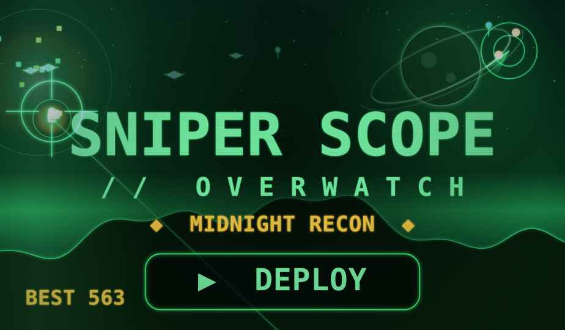
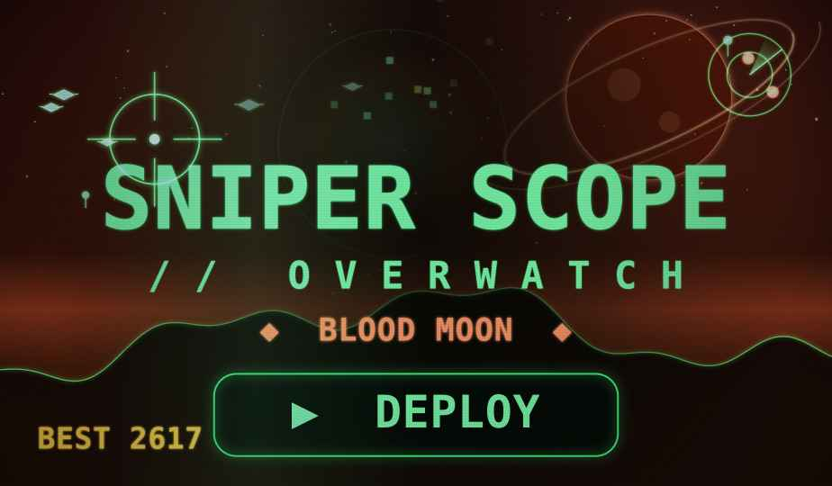

ADAM // COMMAND CENTERDEFENSE GRID · SNIPER SCOPE // OVERWATCH
HOW IT SITS IN YOUR HUB — SIDE BY SIDE
The same Sniper Scope panel, dropped into command-center chrome, in both worlds. This is the tile as it would live on your dashboard. Left: Midnight Recon. Right: Blood Moon.
SNIPER SCOPE · OVERWATCHR1 · MIDNIGHT RECON

Blends with the hub. Reads as part of the green-phosphor set beside your Voice Scope and clocks — cohesive, calm, unmistakably on-brand.
GREEN PHOSPHORFIREFLIESAURORACOHESIVE
SNIPER SCOPE · OVERWATCHR3 · BLOOD MOON

The showpiece. The red world throws the green reticle and UI into hard contrast — a feature tile that grabs the eye the moment the hub loads.
HIGH CONTRASTRINGED MOONEMBERSFEVER SCORING
both are the identical game + panel — only the world skin differs. say "ship recon" or "ship blood moon" to wire that one into the live hub.